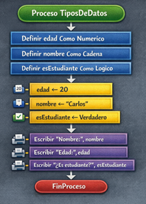
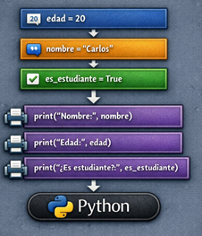

En programación, los tipos de datos básicos permiten representar y manipular la información de acuerdo con su naturaleza. Entre los más utilizados se encuentran los datos numéricos, las cadenas de texto y los valores booleanos. Comprender sus características y aplicaciones resulta fundamental para el desarrollo de algoritmos correctos y eficientes.
Los datos numéricos se utilizan para representar valores cuantitativos y permiten realizar operaciones matemáticas como suma, resta, multiplicación y división. En entornos como PSeInt, estos suelen representarse como valores de tipo numérico, mientras que en lenguajes como Python pueden clasificarse en enteros (int) y números decimales (float). Su uso es común en cálculos, estadísticas y cualquier proceso que implique operaciones aritméticas (Joyanes Aguilar, 2008) .
Las cadenas de texto, también conocidas como datos alfanuméricos, permiten almacenar secuencias de caracteres, tales como nombres, mensajes o cualquier tipo de información textual. En PSeInt se definen como tipo cadena, y en Python como string (str). Este tipo de dato es fundamental para la interacción con el usuario, ya que facilita la entrada y salida de información comprensible (Knuth, 1997) .
Por otro lado, los valores booleanos representan estados lógicos, limitándose a dos posibles valores: verdadero o falso. Estos datos son esenciales en la toma de decisiones dentro de un programa, ya que permiten evaluar condiciones y controlar el flujo de ejecución mediante estructuras condicionales. En PSeInt se expresan como lógico, mientras que en Python se representan como True y False (Wing, 2006) .
El uso adecuado de estos tipos de datos no solo permite organizar la información de manera eficiente, sino que también evita errores durante la ejecución de los programas. Seleccionar correctamente el tipo de dato en función del problema planteado es una habilidad clave que todo programador debe desarrollar. A continuación, se presenta un ejemplo básico en PSeInt:

Su equivalente en Python es:

En conclusión, los tipos de datos básicos constituyen la base para la manipulación de información en cualquier programa. Su correcta comprensión y aplicación permitirá al lector desarrollar soluciones más claras, precisas y funcionales (Knuth, D. E. (1997). The Art of Computer Programming. Addison-Wesley; Wing, J. M. (2006). Computational Thinking. Communications of the ACM, 49(3), 33–35; Joyanes Aguilar, L. (2008). Fundamentos de programación: algoritmos, estructuras de datos y objetos. McGraw-Hill).
A CONTINUACIÒN PODRÀ DESCARGAR EL CÒDIGO FUENTE DE ESTE EJEMPLO, CLIC EN EL BOTÒN DESCARGAR, TODO ESTE CONTENIDO ES CREADO POR LEONEL OSPINA RESTREPO PARA EL DIARIO DE UN PROGRAMADOR, APUNTES DE SEGURIDAD, PYTHON DESDE CERO